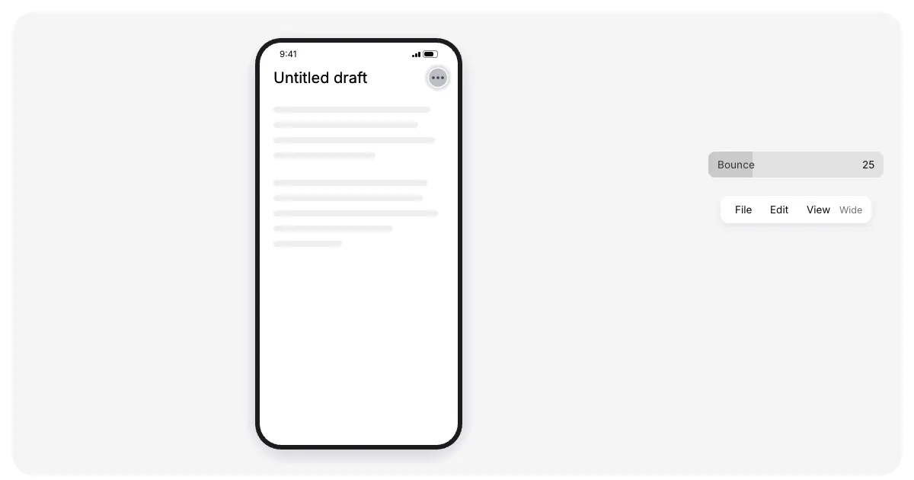

Action Bar Sheet
Command menus that collapse into a ⋯ drawer on phones: rows slide sideways into each menu's items, and the drawer drags and flicks away.

Usage
Add glowkit next to eframe:
cargo add glowkit eframeThen draw it inside any egui Ui:
use glowkit::prelude::*;
use glowkit::interactions::ActionBarSheet;
ui.add(ActionBarSheet::new()
.menu("File", &["New", "Open…", "Duplicate"])
.menu("Edit", &["Undo", "Copy", "Paste"])
.menu("View", &["Zoom In", "Zoom Out"]));Prefer to own the code? The glowkit CLI copies this component's source into your project, shadcn-style:
cargo install glowkit-cli
glowkit add action-bar-sheetEquivalent to
If you know this pattern from suiss/ui, Action Bar Sheet is the Rust version: an original egui implementation, not a port, that runs natively and in WebAssembly.
- Action Barsuiss/ui
About Action Bar Sheet
Action Bar Sheet is one of 18 components in glowkit's Navigation category. It lives in the glowkit-interactions crate, enabled by the interactions feature of glowkit (on by default). It reads its colors from the active glowkit theme, so it matches the rest of your app in light, dark or a custom brand theme, and every color, size and timing has a setter to override it.
Menus and navigation that move with intent: bubble, pill, gooey and staggered menus, card navs, floating and resizable navbars, sidebars, command palettes, tables of contents and morphing tab bars.